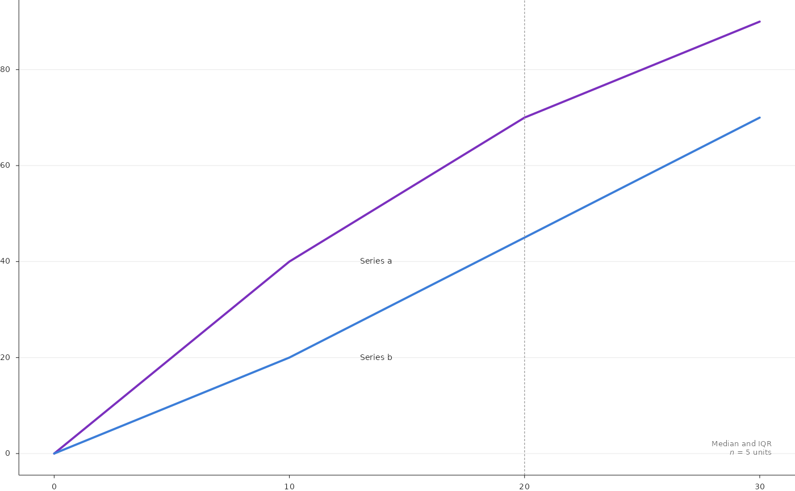

Draws one curve per series over a continuous axis (for example the
median across patients of a cumulative distance distribution) with an
optional band between lower and upper quantiles, an optional dashed
reference line, direct series labels and a corner note written from the
data. With facet, draws a grid of small multiples with identical axes
and a coloured title above each panel.
Usage
PlotQuantileCurves(
data,
x = "x",
y = "median",
lower = NULL,
upper = NULL,
series = "series",
series_order = NULL,
colours = NULL,
linewidth = 1.4,
band_alpha = 0.15,
labels = NULL,
label_at = NULL,
label_dx = 3,
label_size = 5.3,
reference_x = NULL,
reference_linewidth = 0.5,
x_limits = NULL,
y_limits = NULL,
x_breaks = NULL,
y_breaks = NULL,
x_nbins = 6,
y_nbins = 9,
x_label = NULL,
y_label = NULL,
tick_size = NULL,
note = NULL,
note_xy = c(0.97, 0.04),
note_hjust = 1,
note_vjust = 0,
note_size = 5,
note_colour = "muted",
facet = NULL,
facet_order = NULL,
facet_ncol = 4,
facet_gap_mm = c(5, 5),
facet_data = NULL,
facet_title = NULL,
facet_note = NULL,
facet_group = NULL,
group_colours = NULL,
facet_title_size = 5.6,
facet_note_size = 4.6,
box_mm = NULL,
style = ManuscriptStyle()
)Arguments
- data
Tidy data: one row per series (and facet) and x value.
- x, y
Columns of the x value and the curve value.
- lower, upper
Optional band columns.
- series
Series column.
- series_order
Drawing order of the series (later on top).
- colours
Named colours per series.
- linewidth
Curve width in points.
- band_alpha
Band opacity.
- labels
Optional named direct labels per series.
- label_at
x value at which direct labels are placed; the label sits
label_dxx units to the right of the curve value there.- label_dx, label_size
Label offset (x units) and size (points).
- reference_x
Optional x of a dashed vertical reference line.
- reference_linewidth
Its width in points.
- x_limits, y_limits
Axis limits (automatic with 5% margins when
NULL).- x_breaks, y_breaks
Optional tick positions; by default chosen as by the automatic locator of common figure code with at most
x_nbinsandy_nbinsintervals.- x_nbins, y_nbins
Maximum numbers of tick intervals.
- x_label, y_label
Axis titles.
- tick_size
Tick label size in points.
- note
Optional template (see
FormatTemplate()) filled from the first row ofdata, drawn atnote_xy(panel fractions).- note_xy, note_hjust, note_vjust, note_size, note_colour
Note placement and style.
- facet
Optional column defining small multiples.
- facet_order
Order of the facets (row by row).
- facet_ncol
Number of columns.
- facet_gap_mm
Gaps between neighbouring panels in millimetres (horizontal, vertical), measured between the data areas.
- facet_data
Optional data frame with one row per facet (column
facet) used for titles.- facet_title, facet_note
Templates written above each panel: a bold title coloured by
facet_groupand a smaller muted note to its right.- facet_group
Column of
facet_datawhose value selects the title colour fromgroup_colours.- group_colours
Named colours per group.
- facet_title_size, facet_note_size
Sizes in points.
- box_mm
Size of the data area
c(width, height)in millimetres, passed byRenderFigure(); used by"auto"tick intervals (seeNiceBreaks()).- style
A
ManuscriptStyle()object.
Examples
d <- data.frame(series = rep(c("a", "b"), each = 4), x = rep(c(0, 10, 20, 30), 2),
median = c(0, 40, 70, 90, 0, 20, 45, 70), lower = c(0, 30, 60, 85, 0, 10, 35, 60),
upper = c(0, 50, 80, 95, 0, 30, 55, 80), n = 5)
PlotQuantileCurves(d, colours = c(a = "#7B2FBE", b = "#3B7DD8"), reference_x = 20,
labels = c(a = "Series a", b = "Series b"), label_at = 10,
note = "Median and IQR\nn = {n|d} units")
